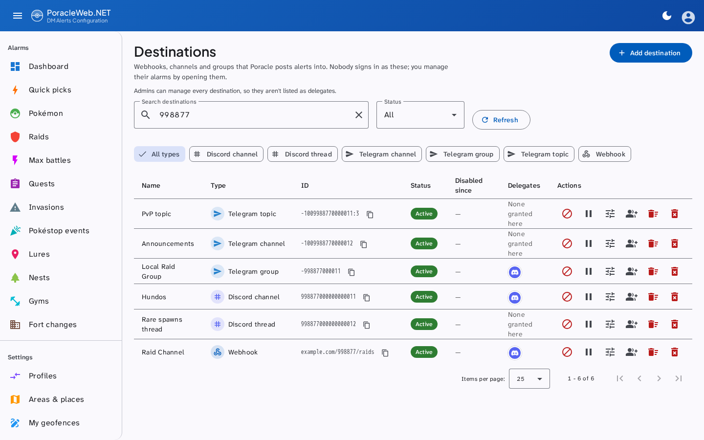
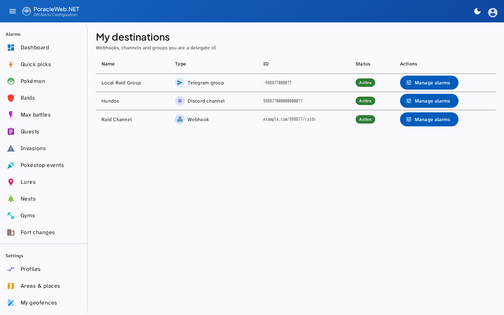
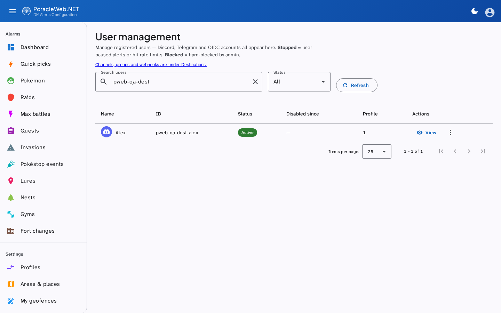
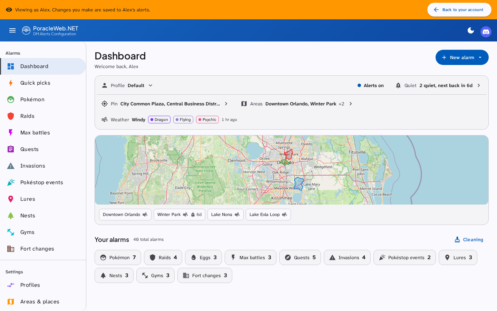

Destinations and delegates¶
A destination is a Poracle account that alerts are posted into rather than sent to a person. It holds alarms exactly as a person does (profiles, areas, a pin, filters), but nobody signs in as it. The commonest kind is a webhook: an account whose id is a Discord webhook URL. Communities use one per feed: a raids channel, a hundo channel, a nests channel.
A delegate is a person allowed to manage one of those accounts without being an administrator of this site.
People and destinations¶
Poracle keeps people and destinations in one table, told apart by a type. Admin → Users lists the people. Admin → Destinations lists everything else, so a Discord channel or a Telegram group never shows up as a user you could block or impersonate by mistake. The Users page links across to Destinations.
| Kind | Poracle type | Listed under |
|---|---|---|
| Person | discord:user, telegram:user, or no type at all (older accounts) |
Users |
| Webhook | webhook |
Destinations |
| Discord channel | discord:channel |
Destinations |
| Discord thread | discord:thread |
Destinations |
| Telegram channel | telegram:channel |
Destinations |
| Telegram group | telegram:group |
Destinations |
| Telegram topic | telegram:topic |
Destinations |
Anything else Poracle holds with a type that isn't a person also lands on Destinations, shown with its raw type, rather than on neither page. That covers an operator's typo or a type added later. Such a row can't take delegates and a delegate can't open it: only the six kinds above can.
The Destinations page has a search box and a filter by type (the chips appear only when more than one type is present), plus the usual status filter. Each row has a button that copies its id, which for a webhook is the whole URL even though the page shows it shortened.
Adding a destination¶
Admin → Destinations → Add destination. The dialog asks what kind of destination it is first, then for a name, the id that kind is addressed by, and an optional note. Poracle can post alerts into six kinds:
| Kind | What to paste as the id | Where to find it |
|---|---|---|
| Webhook | The webhook URL, starting http:// or https:// |
Discord: channel settings → Integrations → Webhooks → Copy Webhook URL |
| Discord channel | The channel's id, digits only (up to 20) | Turn on Developer Mode (User Settings → Advanced), then right-click the channel → Copy Channel ID |
| Discord thread | The thread's id, digits only (up to 20) | With Developer Mode on, right-click the thread and copy its ID |
| Telegram channel | The chat id, a negative number such as -1001234567890 |
Channels and supergroups start with -100. A bot added to the chat sees the id in every update it receives |
| Telegram group | The chat id, a negative number | A supergroup's id starts with -100; an older basic group's is shorter, such as -1234567890. Both are accepted |
| Telegram topic | Two fields: the group's chat id and the topic number, saved as chat:topic (-1001234567890:42) |
Copy a link to any message in the topic. In t.me/c/1234567890/42/100 the chat id is -1001234567890 and the topic number is 42 |
The dialog refuses only an id that can't be real: letters in a Discord id, a positive Telegram chat id, a topic number of zero. Nothing checks that the channel or chat exists, so paste the id rather than typing it. Alerts sent to a wrong id go nowhere. For a Discord channel or thread, or any Telegram kind, Poracle's own bot also has to be in that channel or chat and allowed to post there.
The id must be unique. If it's already in Poracle, the add is refused and names the account holding it, for example: This ID is already in Poracle as "raids" (Discord channel). That way you can tell a mistyped id from a destination you added before. If Poracle rejects the account, the half-written record is removed, so a failure means nothing was created and a retry is safe.
The same page can pause, resume, block, delete the account's alarms, delete the account outright, and open its alarms directly (see what a delegate can do).

Deleting a webhook takes everything it owned with it, delegate grants included. Recreating the same URL later starts clean rather than adopting the old grants.
Adding a delegate¶
Admin → Destinations → the group-add icon on the destination's row. Any of the six kinds can take delegates: a webhook, a Discord channel or thread, or a Telegram channel, group or topic. A row with any other type has no icon.
Both accounts have to exist first, and the delegate has to be a person: a channel or group can't sign in, so a grant to one is refused. The person must have registered with the Poracle bot and signed in at least once, so there is an account to grant; a grant naming an account that does not exist is refused rather than stored.
Search for them and select. The grant is written immediately, and they can reach the destination on their next page load, with no sign-out and no restart.
The dialog shows three kinds of chip:
| Chip | Source | Removable here |
|---|---|---|
| Locked, "global admin" | Poracle's admins list, or PORACLE_ADMIN_IDS |
No |
| Locked, "config delegate" | Poracle's own config | No |
| Removable | This site's webhook_delegates table |
Yes |
The locked ones are shown so you can see who already has access, not so you can change it. They come from somewhere this site does not write.
What a delegate can do¶
My Destinations, under Destinations in the sidebar, lists every destination they manage with its kind, so a Telegram group and a webhook of the same name can't be confused. Manage alarms switches the session to that destination: from there they see the site as it does, and can set up alarms, areas, profiles, its pin, and send test alerts. A banner names what they're managing ("Managing Discord channel #raid-alerts"), and the button on it returns them to their own account and to My Destinations. A session that ends because the grant was revoked lands there too.
The page used to be My Webhooks at /my-webhooks. That address redirects, so old bookmarks still
work.

A delegate cannot create or delete destinations, grant delegation to anyone else, or reach any admin page. Their access is exactly the destinations granted to them and nothing more, re-checked on every attempt rather than trusted from their sign-in. Opening an account checks its type at that moment, so a grant whose id turns out to belong to a person opens nothing.
Mentions on a destination's alarms¶
Alerts to a webhook, a Discord channel or a Discord thread land in a channel, so an alarm can mention a
role or a person when it fires. Telegram has no equivalent, so Telegram destinations don't get the
field. While you're managing one of those three (as a delegate, or an admin viewing it), the edit
dialogs have a Mention field taking a Discord role (<@&123456789012345678>) or a person
(<@123456789012345678>). Every type has it except Pokéstop Events. It isn't offered on your own
alarms, where it would have nobody to notify, and it isn't in the add dialogs: add the alarm, then
edit it to set the mention.
The mention is stored as the rule's ping. Later edits from the web, a bulk distance change and the
cleaning toggle keep it, and duplicating a profile copies it.
Viewing as another account¶
The same session switch is open to admins for any account. Admin → Users lists every person Poracle knows. View on a row opens the site as that account, and the row's menu stops or starts their alerts, blocks them, or deletes their alarms or the account.

While viewing, a banner reads "Viewing as" and the account's name, with Back to your account to return. Quiet-period writes are refused in that session, so an admin checking why someone gets nothing can't silence them by accident.

Do you need to edit Poracle's config?¶
For managing a destination on this site, no. Alarm writes reach Poracle over a server-to-server secret, and the authorisation happens here. A row in this site's own table is enough, which is what the admin dialog writes.
For managing it through the bot, yes. For a webhook that is [[discord.webhook_admins]] in
Poracle's config; for a channel it is [[discord.delegated_admins]] or [[telegram.delegated_admins]].
Either needs a Poracle restart, and this site cannot grant them.
The two are independent, and someone who should have both needs both. This site accepts a
webhook_admins entry as proof for its own access, so a webhook delegate configured in Poracle gets
My Destinations here without anyone adding a row. A delegated_admins entry counts only when the
delegation_poracle_channels setting is on (see below).
Where delegation is resolved from¶
Three sources, unioned on every check:
| Source | Covers |
|---|---|
Poracle's getAdministrationRoles |
discord.webhook_admins and any Discord guild-role delegation Poracle performs; the channel lists from delegated_admins only when delegation_poracle_channels is on |
This site's webhook_delegates table |
What the admin dialog writes, for any of the six kinds (the table's name predates that) |
Administrators, from PORACLE_ADMIN_IDS or Poracle's admins list |
Every destination. They're never listed as delegates of a particular one |
Every grant is checked against the list of destinations Poracle holds, read once a minute. A grant
naming a webhook however the operator wrote it in webhook_admins (by the webhook's name, or by its
URL) is resolved to the webhook it names, so both work. A channel grant from Poracle is matched by id
only. A grant naming nothing Poracle holds is ignored: it grants access to nothing, and counting it
would put My Destinations in the sidebar over an empty page.
Following Poracle's channel admins¶
Admin → Settings → Administration → Follow Poracle's channel admins (delegation_poracle_channels)
is off by default. Poracle's [[discord.delegated_admins]] and [[telegram.delegated_admins]] say who
may administer a channel in the bot, which isn't necessarily who should manage its alarms here, so this
site ignores them until you turn it on. With it on, anyone those entries name gets the channels they
cover as delegations here. An entry for a whole Discord server covers only the channels registered
as destinations on this site, never every channel in the server. Saving the switch takes
effect straight away. If PoracleNG can't read the Discord channels at that moment, the list it reports
may be shorter until it can. See Site Settings.
The answer is cached for a minute per person, so granting or revoking takes effect within about that long rather than at their next sign-in. A lookup that cannot reach one of its sources is never cached, and falls back to what the session already knew rather than dropping access mid-session.
Troubleshooting¶
They cannot see My Destinations. The nav item appears only for people who manage at least one destination. Check the grant exists on the destination's delegates dialog, and that they signed in at least once before being granted — a grant to an account that never existed is refused, so an absent chip means it was never written.
Impersonating them hides the page. It does not any more: an impersonation session sees the delegate's destinations, which is the point of looking. Impersonating a second account from inside that session is refused; leave the first one before starting another.
They can see it in Discord but not here, or the reverse. These are separate grants. The bot side is Poracle's config; this side is the delegates dialog. Having one does not imply the other, although a Poracle-side grant does also work here.
My Destinations is in the sidebar but the page is empty. The grant names a destination that does
not exist here. The usual cause is a webhook_admins target that no longer matches any webhook — a URL whose
token was rewritten when the config was converted from PoracleJS's JSON, for instance. Naming the
webhook by its name rather than its URL avoids the whole class of problem.
A revoked delegate still has access. Give it a minute — the resolution is cached that long. Beyond that, check whether they are a global admin or hold a Poracle-side grant, both of which this site can display but not remove.
Related¶
- Site Settings: the admin settings the destination pages sit
alongside, including
delegation_poracle_channels - Database — the
webhook_delegatestable